CLAVES POR DEFECTO
Ejemplo para ver con wifiway la clave de una red, con formato WLAN_XX de telefonica en la que tiene el nombre y la clave, que da el MODEM por defecto. Tambien es valido para redes de Jazztel, Dlink, SpeedToouch y en wifiway 2.0 Wlan4xx y con un nuevo modulo las Ono4xx.
Para que funcione esta forma de ver la clave de la red, debemos tener un ordenador encendido y enganchado a internet.
Para empezar una vez funcionando el wifiway, pulsar el icono inferior izquierdo y subir el raton hasta el icono Wifiway, y aquí seleccionar el icono wíreless, aquí entramos en airoscript new (spain).
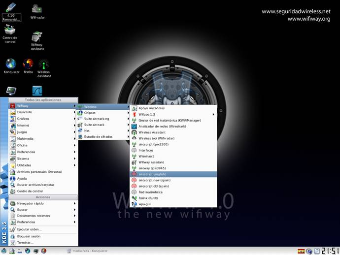
Te saldra una pantalla que te pone algo asi como que es en plan instructivo y que el mensaje desaparecera en unos segundos y de seguido se te queda la pantalla asi.
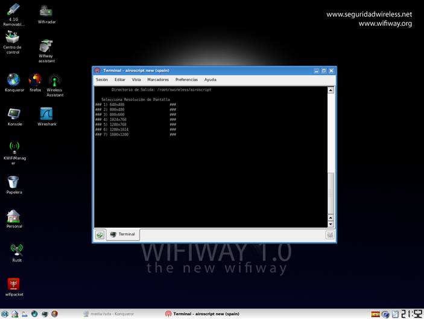
Pon el numero que quieras “yo pongo 1” y pulsa intro y te saldra esta otra pantalla
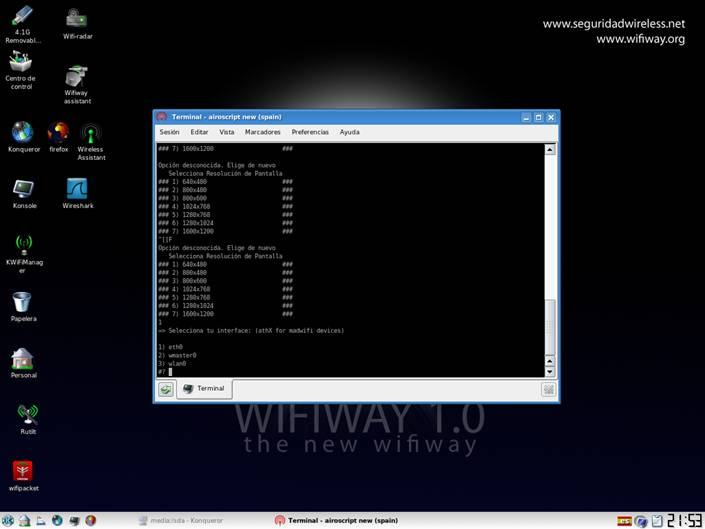
Elige tu tarjeta en mi caso pongo el 3 que es mi adaptador wifi y me sale esta otra pantalla
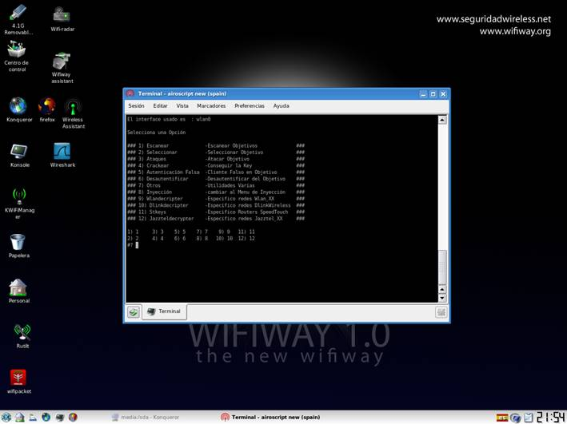
Pulsamos el numero 1 para escanear y nos sale la siguiente pantalla
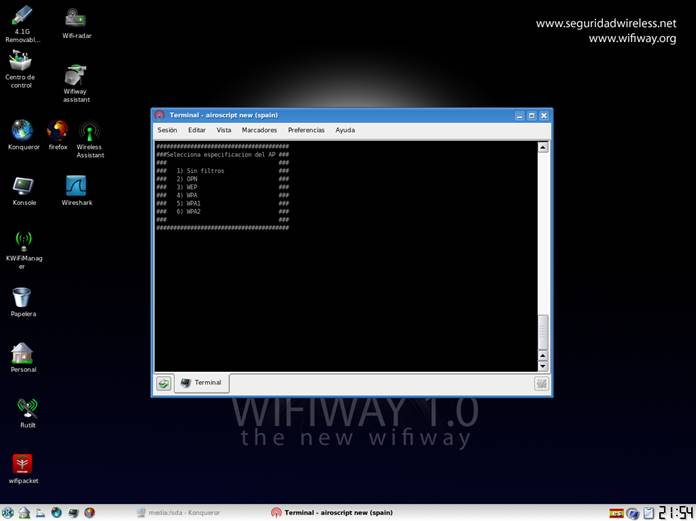
Ponemos el 3 ya que es una clave wep y nos sale
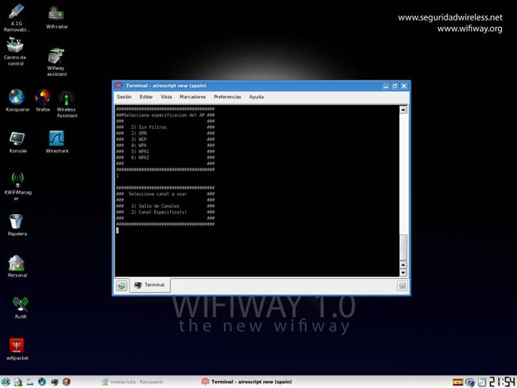
Ponemos 1 salto de canales y nos sale
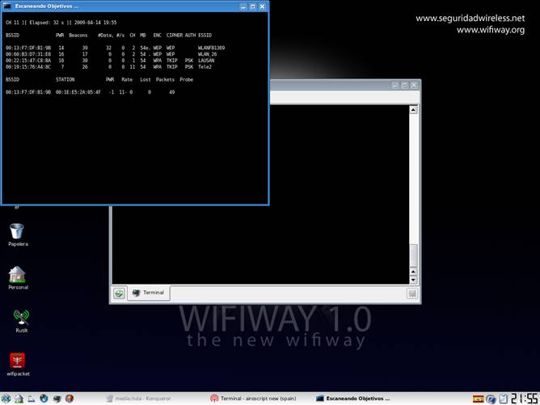
Esperamos a que salga nuestra red en mi caso sera la wlan_52 y cuando tenga la columna #data 5 ó mas datas como en esta imagen
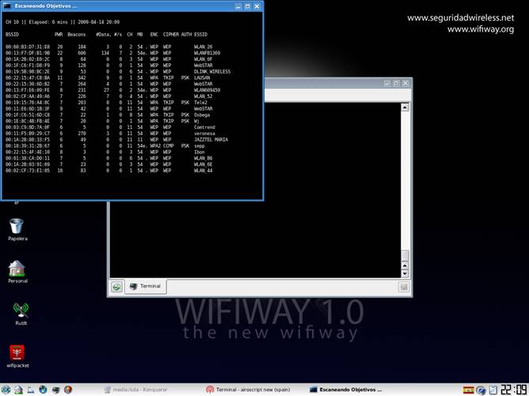
Entonces cerramos esta pantalla y nos vuelve a salir esta otra
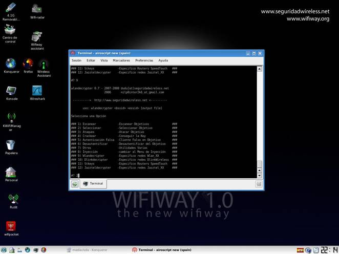
Entonces ponemos el 2 para seleccionar el objetivo y nos saldria
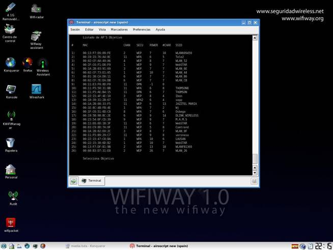
Entonces ponemos el numero de nuestra red que en mi caso seria 3 y me saldria esta pantalla
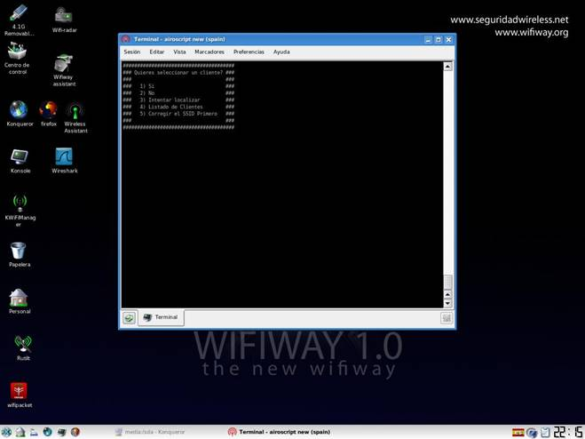
Pondriamos el 2 ya que en este tipo de ataque no lo necesitamos y nos saldria esta pantalla
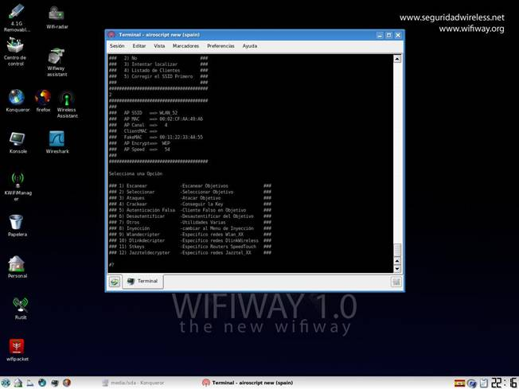
Como es una red tipo wlan_XX pondríamos el numero 9 que corresponde a este tipo de redes y nos saldria esta pantalla con la clave
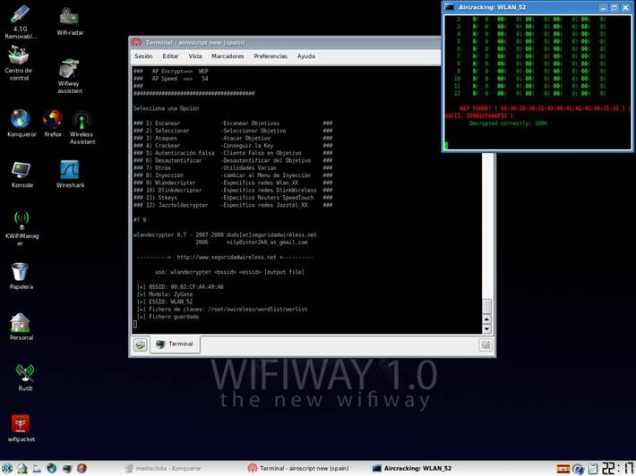
La clave sale en hexadecimal en la linea de arriba, y en ascii en la linea de abajo, casi siempre se mete la clave en ascii, pero algunos adaptadores solo permiten en hexadecimal. Cuando me intente conectar Windows me pedira la clave y se la tengo que meter, pero ¡ojo! en mayusculas.